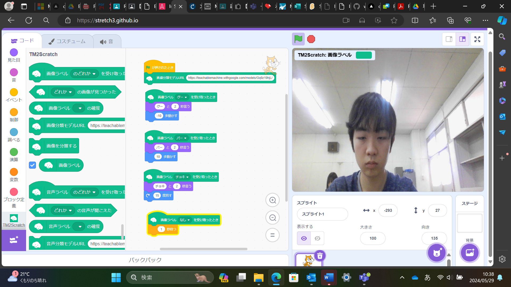
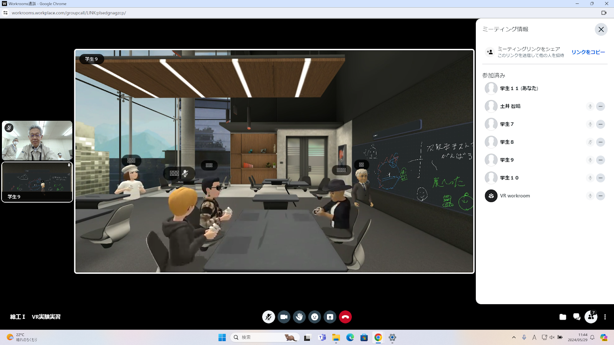

第2週目
2-1 2週目のレポートをHTMLで作る
1.内容
二週間目の実験実習のI１コースで行った、teachable machineを使ったスクラッチのプログラミング、そしてVR会議室を利用したときのそれぞれの内容と感想をまとめている。
2.感想
1週間目よりはhtmlのweb制作に慣れてきた。
3. 2週目が完成した人は1週目のレポートも完成させる
2-2 機械学習体験

1.内容
カメラで、グーが映されたらネコがグーと言って右に進み、チョキが映されたらネコがチョキと言って15度右に回り、パーが映されたらネコがパーと言って左に進み、何も移されなかったらネコが止まるプログラムを作成した。このプログラムはteachable machineで作成した判別AIを使っており、スタートボタンが押されたとき、https://teachablemachine.withgoogle.com/models/Gq9z19hjL/を使用してカメラに映る画像を認識する。もし認識結果がグーならば、ネコをグーと2秒間しゃべらせて10歩進む。もし認識結果がチョキならば、ネコをチョキと2秒間しゃべらせて15度回転させる。もし認識結果がパーならば、ネコをパーと2秒間しゃべらせて‐10歩進む。もし認識結果がなしならば、ネコを1秒間停止させるというプログラムである。
2.感想
初めて画像認識のAIを使ってみて、最初はグーやチョキ、パーをそれぞれ認識できるようにするのは難しいことだと考えていたが、Teachable machineを使ってみて思っていたよりも簡単に作るれることが分かった。
2-3 VR（バーチャルリアリティー：Virtual Reality）会議室の体験

1.内容
メタクエストを使って4番目にバーチャル会議の体験を行った。会議内ではコントローラーで自分の座っている席の移動法やホワイトボードの使い方を学んだ。さらに、VR上でホワイトボードを扱い、リモコンの持ち方をペンのようにすることでVR上でマーカーとして使えるということも教わった。
2.感想
今回メタクエストを使ってみて、リモコンをペンのように持つことで実際にVR上で描くことができ、VR上ではリモコンを持った際にしかアバターの手が動かないと思っていたが、実際はリモコンがなくても手を認識でき、自分の指の動きまで再現できていたことに驚いた。